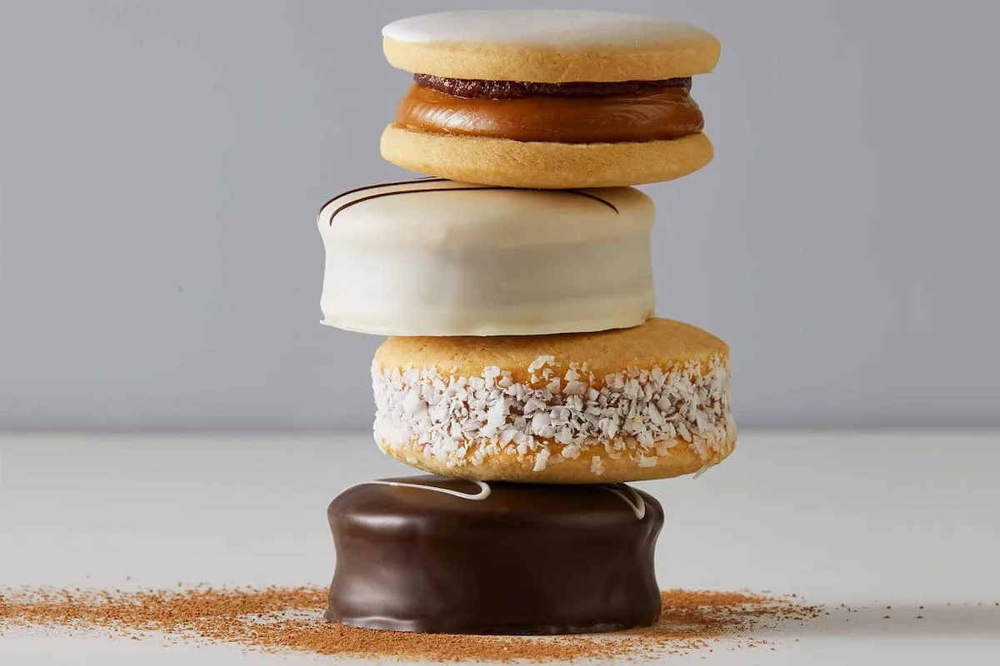

Alfajor

Alfajor is a traditional confection from Argentina made with two or more cookies separated
from each other by fillings like jam, jelly, caramel, etc. And they can also have a bath our outside cover.
Ingredients
For 12 Alfajores
- 100gr Flour
- 50gr Butter
- 2gr Baking Podwer
- 1/4 tablespoon Baking soda
- 35gr Sugar
- 3 Egg yolks
- 20gr Chocolate
- 350gr Caramel
- 200gr Semisweet chocolate
Steps
Cookie tops
- Sieve the flour. Then from above add the baking podwer and baking soda.
Finally add the sieved sugar and chocolate (if you are using powdered chocolate).
Mix the ingredients and shape a crown.
- In the center, add 3 yolks and with the help of you hands integrate everything
little by little.
- On the other hand, melt the butter together with the chocolate (if we use chocolate coating).
Add this to the preparation
and join it with your hands. When a uniform dough is achieved,
wrap it in plastic wrap and try to flatten it by stretching it a little with your hands or with a rolling pin.
Place in the refrigerator for 10 minutes.
- After time you should feel a more unified and firm mass.
Remove the plastic wrap and place the dough on a smooth floured surface. With the help of a rolling pin,
stretch the dough to 1 cm thickness and cut it into portions of the desired size and shape.
- Place the cookie tops on a baking dish and place them in the freezer for 15 minutes.
At this moment, preheat the oven to 180°.
- After the time has passed, bake the cookie tops, controlling their cooking, for 10 minutes maximum.
Alfajor
- Take a cold cookie top and place two tablespoons of caramel on it. Then join it with another
lid and even out the edges with a teaspoon. Once all the cookie tops are filled,
place them in the refrigerator for 10 minutes.
- Meanwhile, melt the chocolate for the cover in a bain-marie or in the microwave.
- After time, remove the alfajores from the refrigerator and bathe them one by one.
Then wait for the chocolate to cool and serve.